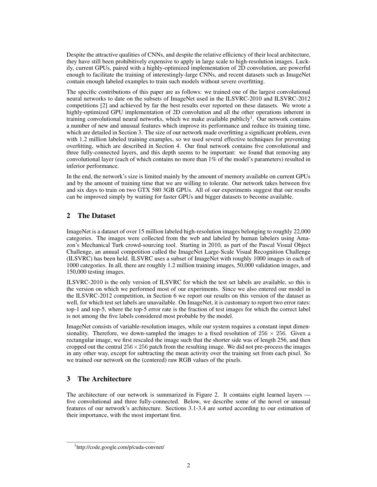
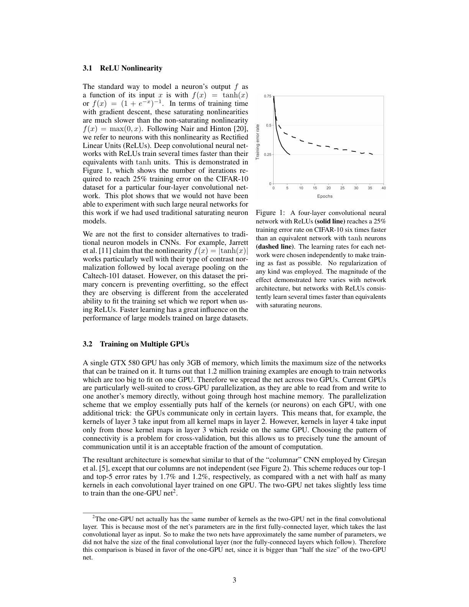
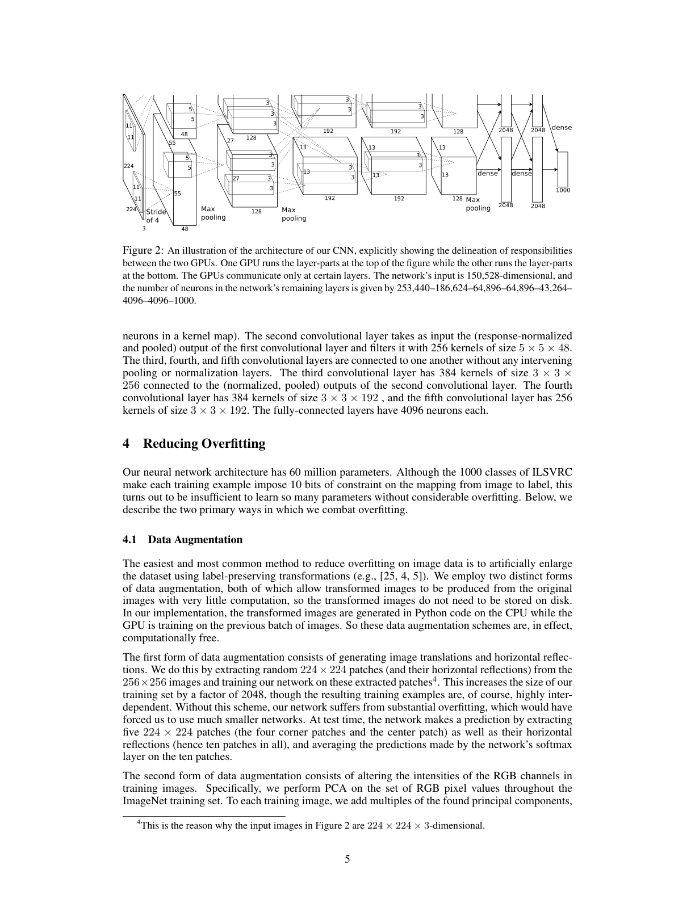
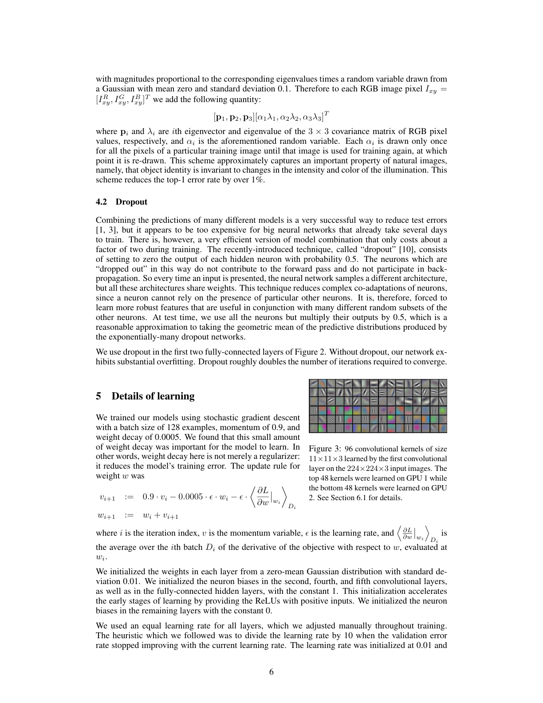
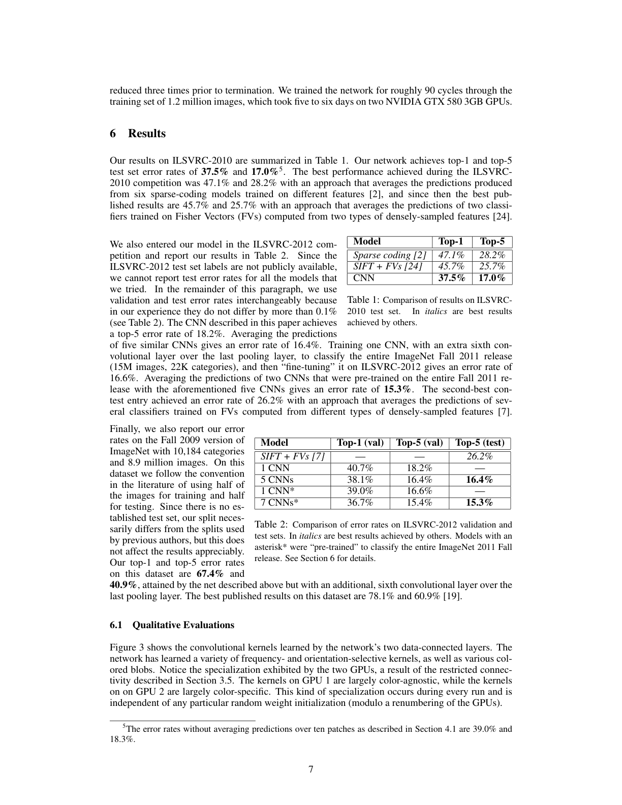
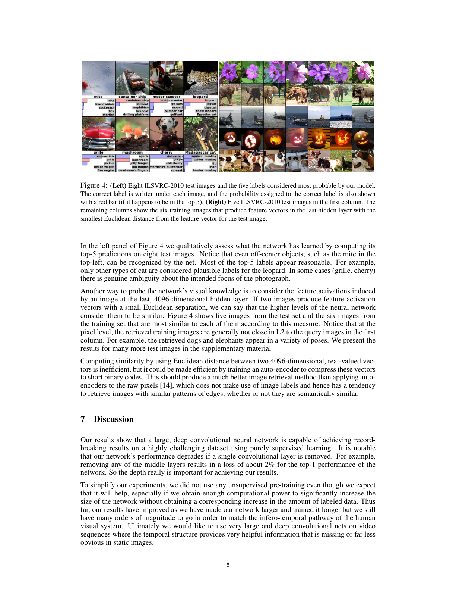

ImageNet classification with deep convolutional neural networks

| Architecture Type | Deep Convolutional Neural Network (CNN) |
|---|---|
| Key Innovation | Large-scale training on GPUs, ReLU activation, and Dropout regularization. |
| Performance Metric | 15.3% top-5 error on ImageNet (winner of ILSVRC 2012). |
| Computational Efficiency | First major success of multi-GPU training for deep vision models. |
| Venue | Communications of the ACM |
| Year | 2012 |
| Citations | 127985 |
| DOI | Link |
ImageNet Classification with Deep Convolutional Neural Networks, often referred to as AlexNet, is the seminal paper that triggered the modern deep learning revolution. By training a large, deep convolutional neural network on the 1.2 million images of the ImageNet LSVRC-2010 dataset, the authors achieved a top-5 error rate of 15.3%, shattering the previous state-of-the-art of 26.2%. This work demonstrated the power of GPUs for training deep networks and introduced key techniques like ReLU activations and Dropout that are now standard in the field.
The ILSVRC 2012 Breakthrough
In 2012, the ImageNet Large Scale Visual Recognition Challenge (ILSVRC) provided a benchmark of over 1.2 million images across 1,000 categories. Alex Krizhevsky, Ilya Sutskever, and Geoffrey Hinton entered a deep convolutional neural network that significantly outperformed all other entries, which mostly relied on traditional hand-crafted features and support vector machines.
This victory marked a paradigm shift in computer vision, proving that end-to-end representation learning from raw pixels was superior to engineered features. The magnitude of the improvement convinced the broader research community of the potential of deep learning.
Architecture: Convolutional and Fully Connected Layers
AlexNet consists of eight learned layers: five convolutional layers followed by three fully connected layers. The first convolutional layer filters the 224x224x3 input image with 96 kernels of size 11x11x3. Subsequent layers use smaller kernels (5x5 and 3x3) to capture increasingly complex features.
To fit the large model into the limited memory of GPUs at the time (3GB NVIDIA GTX 580s), the network was split across two GPUs. Specific layers communicated between GPUs, while others operated independently, a precursor to modern distributed training strategies. Figure 2 details this multi-GPU architecture.
Key Innovations: ReLU and Dropout
One of the most important technical contributions of the paper was the use of the Rectified Linear Unit (ReLU) activation function, $f(x) = \max(0, x)$. Prior to AlexNet, saturating activations like Tanh or Sigmoid were standard, but ReLUs allowed the network to train several times faster by mitigating the vanishing gradient problem.
To combat overfitting in the large fully-connected layers, the authors employed 'Dropout.' This technique involves randomly setting the output of each hidden neuron to zero with a probability of 0.5 during training. This forces the network to learn more robust, redundant features and is now a fundamental tool for regularizing deep models.
Data Augmentation and Overfitting
Despite its depth, AlexNet was prone to overfitting due to its 60 million parameters. The authors used two primary forms of data augmentation to artificially enlarge the dataset: generating image translations and horizontal reflections, and altering the intensities of the RGB channels using PCA-based color augmentation.
These techniques, combined with Dropout, allowed the model to generalize effectively to unseen images, establishing a template for training large-scale vision models that persists today.
Concept Breakdown
A non-saturating activation function that speeds up training by providing constant gradients for positive inputs.
A regularization technique where neurons are randomly ignored during training to prevent co-adaptation and overfitting.
A layer that applies a set of learnable filters to the input to extract spatial features like edges, shapes, and textures.
The process of creating new training examples by applying transformations (crops, flips, color shifts) to existing data.
A technique used in AlexNet where the pooling regions overlap, which the authors found slightly reduced error rates.
Mathematics
ReLU Activation
| Symbol | Meaning |
|---|---|
| $x$ | The input to the neuron |
| $f(x)$ | The activated output |
Local Response Normalization (LRN)
| Symbol | Meaning |
|---|---|
| $a^i_{x,y}$ | Activity of a neuron computed by applying kernel i at (x,y) |
| $b^i_{x,y}$ | The response-normalized activity |
Figures and Explanations


Detailed diagram of the AlexNet architecture, showing the split between two GPUs and the progression from convolutional to fully connected layers.

Visualization of the 96 convolutional kernels learned by the first layer, showing that the model successfully learned to detect edges and color blobs.


